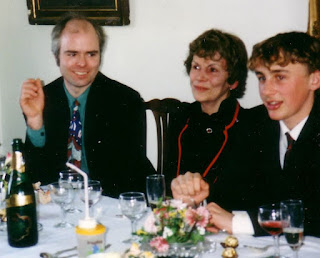
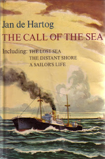

 |
| Angela Wyndham Lewis with Francis Wheen & Frank Thorogood February 1994 |
{kind=link}
We were joined by a small lady in a thick fur coat. Her name
was Angela and it transpired that she would be travelling with us. We had seen
her and her daughter in the resort. They both had fur coats, neat boots and
hennaed hair. They wore eye make-up, soft cream polo neck jerseys, stretchy
black trousers and looked unachievably soignée. There had been a problem with
the couchette arrangements. The daughter, Cathy, was elsewhere and Angela would be
sleeping in our compartment. I remember feeling shy and worried that our family would
behave badly in some way. We might fart or make stupid jokes.
Once our luggage was stowed and we were all settled into our
bunks, Angela began to talk. It seems to me now that she told us stories for
the entire journey though I suppose we must have slept. It was magical. She had
been (still was?) an actress. Her voice was beautiful and her timings perfect –
even if I understood almost nothing of the context of what she said. Her subject matter was
people and worlds outside my knowledge. My parents fared better and from
that night a friendship sprang up, with my mother particularly, that lasted until
the end of their lives.
Angela died in 2000. She liked to give the impression she
was younger than my mother, in fact she was a few years older. She had been born
in 1920, daughter of the journalist D.B. Wyndham Lewis (‘Beachcomber’) and Mary
Jane Holland. Her mother conceived a second daughter with writer J.B. Priestley
and married him in 1926. Angela moved with her and grew up as Priestley’s
step-daughter, with his surname. That marriage had lasted until 1953 when
Priestley divorced Angela’s mother and married the archaeologist Jacquetta
Hawkes. None of this meant much to me on that first meeting.
Angela’s surname then was de Hartog. This also seemed exotic. (Most surnames
do, to a Jones.) Her husband had left her and her children and was living in
America. He was a writer and, I gathered, had not been kind to them.
After that first magical journey Angela and her fur coat quite
often came to stay with us. It was always an event and, in my memory, her
lovely voice and graceful movements lit up our house. I could see, however,
that her life was not easy and the composed, sophisticated appearance was both
essential and a private struggle. Her acting career had hit a high point when
she had played Peter Pan for the annual London production but that was in the past. Now money was in short supply. She survived on occasional roles and
some teaching. I felt angry with the absent Jan de Hartog and vowed never to
read any of his books.
{kind=link}

This week, on Thursday, I was at the Cruising Association at Limehouse Basin, in London. I’d given a talk and stayed the night and my treat was to spend a morning in their well-stocked library. Among the discards (I protested against anything being discarded but was assured it was only when there were duplicates) was an omnibus volume of Jan de Hartog’s early novels: The Call of the Sea. I took it with me.
It was a wet and windy walk to Limehouse station; a brief,
wet, change at Poplar; a long wet and cold wait at Stratford. When I changed at
Colchester, the train was delayed and when I finally reached Woodbridge all I
had time to do was haul my suitcase up into the town (through rain and wind),
collect a magazine proof, hurry back (through the rain) and check all was well
with Goldenray, then wait on a metal
bench for the train, which was delayed. It was delayed again at Ipswich – but
did I care? I had been reading The Call of the Sea since soon after Poplar
and was quite happy for the journey to continue indefinitely (or at least until
I’d finished the volume).
Another magical journey. The first novel in the collection is
brief – and odd indeed to an English reader. The Lost Sea is the story of a small Dutch boy who runs away and
becomes a ‘sea mouse’ – as de Hartog himself had done. It takes place
immediately before the final damming and draining of the ZuiderZee; in the
1930s when Dutchmen still wore clogs and baggy trousers and vicious sea-battles
took place between the catholic Volendammers and protestant Huizingers,
fishermen with incompatible netting techniques as well as visceral hatred of
each other. It’s a strange, absorbing, brutal book but light dawns at the end
when the child realises he is a Liar.
Liars (in The Lost Sea) are the story-tellers, drunken layabouts, usually, who must
be bribed with bottles of the finest Geneva to come on board and tell strange tales in their lovely voices. Liars are the
fiction-spinners; liars-R-us. Jan de Hartog was a Liar, perhaps Angela was too.
Perhaps we all meet that temptation when we find a willing audience …on a long
train journey, perhaps? 'It was a story that amazed me as much as the others, gazing at me motionlessly in the lamplight[...] For although I told the truth, yet it was one big bunch of lies; for I got mixed up with what I had been told and what I had experienced.' Don't we all? But a story-teller does it so well...
The Lost Sea was
published in 1951. It was not de Hartog’s first novel but his first in English.
It had been dictated in Paris in 1949 (dictated, not written ‘because I could
not spell’). This was when he was married to Angela. Cathy, their daughter was
born in this year: their son Nicholas (who I often heard about but never met) had
been born in 1947. It had been an immediate post-war marriage: did that make
Angela the prototype of the imperturbably English June Simmonds who the
protagonist marries at the end of The
Distant Shore (1952)? And how can one stay angry with
someone who writes so beautifully about ‘the joy’ of writing in English: ‘which
is a musician’s joy rather than a poet’s or a painter’s. It is like a superb Renaissance-built
cello of amazing warmth and range.’
(Jan de Hartog, author's preface 1966)
Sadly, the act of writing in English was seen as a betrayal in de Hartog's native country. His first novels had been written in Dutch – and the first of them all, Holland’s Glory (1940, translated in
English as Captain Jan) had become a
sustaining symbol of Dutch resistance during wartime occupation. De Hartog had
been hunted by Nazis, had hidden and escaped, finally coming to England and
marrying Angela. He left behind a wife, Alide, in Holland and two small
children. So a betrayal on two levels? I don’t think he was with Angela, Nick and Cathy for many years
before he moved on, firstly to live on a 90’ Dutch canal boat during the 1953
floods and then to America where he married once again, adopted two small
Korean girls and became a Quaker (also writing a best-selling trilogy on that
subject).
Jan de Hartog’s New
York Times obituary (2002) describes
him as ‘the author of his own life’, which seems a nicely-nuanced judgement.
When the child-narrator of The Lost Sea
first heard himself begin telling the story of his adventures he was shocked:
It was a lie so stupendous that after finishing it breathlessly, I sat for a second waiting for Jesus to swoop down on me in hot revenge. But nothing happened but that Mother Bout’s eyes filled with tears. “Poor darling” she said, “I knew it was all my fault.”The stupendousness of my lie was topped by the stupendousness of the truth it evoked, and I felt, during that long moment as if my whole world of laws and conscience was sagging. How could it be that instead of slapping me, Jesus had come so justly down on Mother Bout who had indeed been the cause of it all?
I don’t think one needs to be cognisant that I am typing
this on International Women’s Day to hear an authentic male cop-out here. ‘It
was all my mother’s/ wife’s / sister’s fault’; ‘The woman that thou gavest to
be with me’ etc etc. Truth and lies are more complicated still. Reflecting on the facts of the story: 'Mother Bout' may have seemed harsh but she was caring for three foster children who were giving no love in return. It was the child's own cowardice that had made him run away. Yet he was only ten, orphaned in a hard world, he could not be responsible ... Where is the truth? Do stories make experience too tidy? 'It was the way I would have told it if I had floated overhead as a seagull and seen it all happen below me, instead of having been trapped in the cable hole full of smoke with Murk going mad in the darkness.'
All I can say is that Jan de Hartog seems to be an honest Liar -- compelling and intelligent as well. I also love the way he uses words. I've ordered more novels and am looking forward to travelling with him again, soon.
All I can say is that Jan de Hartog seems to be an honest Liar -- compelling and intelligent as well. I also love the way he uses words. I've ordered more novels and am looking forward to travelling with him again, soon.